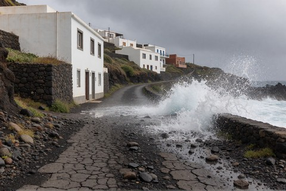

Cronaca · 25 novembre 2026

L'ergastolano per l'omicidio di Yara Gambirasio è ammesso al lavoro esterno dal carcere di Bollate. Un'azienda di Cormano ne ha annunciato l'arrivo ai dipendenti con nome e cognome. L'iniziativa, dice il suo legale, è partita dal carcere.
di Franco Zanghì
Cronaca · 24 novembre 2026

Gli accertamenti tecnici dei carabinieri portano a un uomo di cui non si conosce l'identità: sarebbe l'autore di una telefonata anonima arrivata alla famiglia pochi giorni dopo la scomparsa di Emanuela, nel giugno del 1983.
di Franco Zanghì
Politica italiana · 24 novembre 2026
Sul Riformista Pasquale Ferraro sostiene che l'apertura di Beppe Grillo a Alessandro Di Battista può far saltare il campo largo. L'editoriale per gli abbonati, con il commento dell'autore e due cautele.
di Franco Zanghì
Sicilia · 23 novembre 2026

Le onde sono arrivate fino alle case di San Gaetano e la strada litoranea è chiusa: si teme che il mare abbia scavato alla base del muraglione. Stromboli, Ginostra e Panarea restano isolate, e il cantiere di protezione non è ancora partito.
di Franco Zanghì
Geopolitica · 23 novembre 2026

La procura di Lublino ha stabilito che gli oggetti caduti il 20 novembre erano missili da crociera Kh-101. Varsavia parla di provocazione intenzionale e chiede più difese: per ora ha ottenuto un velivolo di sorveglianza.
di Franco Zanghì
Geopolitica · 23 novembre 2026
Dai dati di stato civile sottratti all'istituto di statistica russo risultano 490 mila militari già registrati come morti. Contando i dispersi, Mediazona e Meduza arrivano a più di 700 mila. Il Cremlino invita a non guardare altri numeri che i suoi.
di Franco Zanghì
Politica italiana · 22 novembre 2026

Sul Riformista Carmelo Briguglio chiama «errore blu» il forfait di Vannacci al tavolo di Palazzo Chigi sugli allarmi bomba. L'editoriale per gli abbonati, con il commento dell'autore e il poscritto sulla legge Scelba.
di Franco Zanghì
Cronaca · 22 novembre 2026

Dopo la festa per i trent'anni del centro sociale, alcune centinaia di manifestanti hanno lanciato bottiglie e fuochi d'artificio contro la polizia a Vanchiglia. Idranti, lacrimogeni, una decina di identificati e nessun agente ferito.
di Franco Zanghì
Geopolitica · 22 novembre 2026

Le immagini dal satellite mostrano la nave rovesciata accanto al molo. Zelensky rivendica l'attacco con sette droni marini, il governo dell'est libico parla di aggressione alla sovranità e le Nazioni Unite chiedono un'indagine indipendente.
di Franco Zanghì
Politica italiana · 21 novembre 2026
Sul Tempo il vicedirettore Alessio Gallicola chiede contro che cosa siano scesi in piazza gli studenti, proprio mentre il Senato approva i libri digitali a metà prezzo. L'editoriale per gli abbonati, con il commento dell'autore.
di Franco Zanghì
Sicilia · 20 novembre 2026

Il velivolo è stato rilevato prima delle 18 e l'allarme è rientrato alle 20:30. Indagano i carabinieri della polizia militare: l'ipotesi più accreditata è quella di un drone civile e di una bravata.
di Franco Zanghì
Cronaca · 19 novembre 2026

Cinquanta persone salvate dalla guardia costiera al largo dell'isola, una bambina della Costa d'Avorio non è stata ritrovata. Il natante era partito da Sfax e si è rovesciato poco prima dell'arrivo della motovedetta.
di Franco Zanghì
Sicilia · 19 novembre 2026

Due roditori trovati morti nelle trappole, cancellieri che si rifiutano di entrare in aula e udienze rinviate. Il presidente del tribunale assicura che non ci sarà nessuno stop: la causa sarebbero i ritardi nella raccolta dell'umido al Capo.
di Franco Zanghì
Politica italiana · 19 novembre 2026

Sul Tempo Daniele Capezzone accusa Giuseppe Conte di avere messo nel mirino l'editore Antonio Angelucci e parla di «intimidazioni da respingere». L'editoriale per gli abbonati, con il commento dell'autore e due riserve.
di Franco Zanghì
Cronaca · 18 novembre 2026

La Corte d'Assise di Vicenza ha riqualificato il reato in omicidio colposo: il pubblico ministero aveva chiesto 14 anni ciascuno per omicidio volontario. Il ragazzo morì a 14 anni di un tumore alle ossa.
di Franco Zanghì
Sicilia · 18 novembre 2026

Il Movimento 5 Stelle accusa il governo regionale di aver tenuto in un cassetto per due mesi un documento del ministero della Salute: il centro non potrà più trattare i neonati. E chiede che la commissione d'inchiesta venga finalmente nominata.
di Franco Zanghì
Politica italiana · 18 novembre 2026

Divieto assoluto per i più piccoli, account collegato a quello di un genitore fra i 13 e i 16 anni, verifica dell'età con l'identità digitale. La maggioranza vuole la norma dentro il decreto sicurezza, e Bruxelles aveva chiesto di aspettare.
di Franco Zanghì
Cronaca · 18 novembre 2026

Una giovane di 25 anni, di origine pachistana, sarebbe stata tenuta chiusa in casa, picchiata e violentata dal marito e dai familiari di lui. Si salvò lanciandosi da un'auto in corsa. Dopo l'incidente probatorio il giudice ha alleggerito una misura.
di Franco Zanghì
Geopolitica · 18 novembre 2026

Il nuovo studio del Pew Research Center sposta il baricentro delle religioni verso l'Africa e l'Asia. Nel 2070 il paese con più cristiani non saranno gli Stati Uniti ma la Repubblica Democratica del Congo. Sono proiezioni, non previsioni.
di Franco Zanghì
Geopolitica · 17 novembre 2026
Parigi porta a Bruxelles le prove sull'attacco informatico che ha alzato le temperature nei supermercati e chiede misure entro un mese. La decisione è attesa per il 14 dicembre e serve l'unanimità, quindi anche il sì dell'Italia.
di Franco Zanghì
Cronaca · 17 novembre 2026

A Roma una trentina di persone, alcune con i cani al guinzaglio, ha attraversato il quartiere intimando a ragazzi stranieri di andarsene. Dieci identificati e un'informativa in procura: si valuta l'aggravante dell'odio razziale.
di Franco Zanghì
Geopolitica · 16 novembre 2026
Google ha individuato in Francia un'intrusione gestita da cima a fondo da un sistema automatico, senza nessun essere umano a guidarlo. I bersagli: siti di giornali, di scuole e di intrattenimento.
di Franco Zanghì
Attualità · 16 novembre 2026

Seimila scuole evacuate in una mattina e nessuna bomba. Sul Tempo Daniele Capezzone parla di guerra ibrida e cognitiva contro l'Italia. L'editoriale per gli abbonati, con il commento dell'autore.
di Franco Zanghì
Attualità · 15 novembre 2026

Un mese dopo l'operazione al polmone, il Pontefice ha recitato l'Angelus a Cusco e nello stesso giorno è sceso a Pucallpa. Parole durissime sulle ferite della foresta e sui capi indigeni uccisi.
di Franco Zanghì
Cronaca · 15 novembre 2026

Chiuse le indagini della procura per i minorenni su due ragazzi, oggi maggiorenni: sette le accuse, dal furto di identità digitali alla frode informatica. Fra i materiali anche istruzioni per ordigni.
di Franco Zanghì
Attualità · 14 novembre 2026

Una donna cubana lo ferma a Roma e gli chiede perché non parli della dittatura. Un lungo post su Facebook accusa gli attivisti di fare il gioco americano. L'editoriale per gli abbonati, con la risposta dell'autore.
di Franco Zanghì
Politica italiana · 13 novembre 2026

Un commento del Giornale accusa la sinistra milanese di avere paura delle divise. L'editoriale per gli abbonati, con il commento dell'autore: i soldati non sono una soluzione, ma intanto la piazza qualcuno la deve presidiare.
di Franco Zanghì
Economia · 13 novembre 2026

Il fondatore del colosso dei microchip lascia dopo più di trent'anni, travolto da una storia di relazioni e sospetti di spionaggio. Il presidente della Campania la commenta a modo suo, ma sotto l'ironia c'è una questione seria.
di Franco Zanghì
Geopolitica · 13 novembre 2026

Un'inchiesta del Wall Street Journal mette in fila tre attacchi con effetti concreti. Parigi accusa i Pasdaran per i frigoriferi dei supermercati. E l'Italia risulta il Paese europeo più esposto.
di Franco Zanghì
Attualità · 12 novembre 2026

La Commissione europea ha consegnato ai cittadini un vademecum per cavarsela da soli 72 ore. È allarmismo o è buon senso? L'editoriale per gli abbonati, nella sua versione scritta.
di Franco Zanghì
Attualità · 11 novembre 2026

L'11 novembre un messaggio con oggetto «Avviso di pericolo» è arrivato in quasi tutte le scuole statali italiane. Istituti evacuati da Bagheria a Catania, nessun ordigno trovato, e la stessa firma era già comparsa all'estero.
di Franco Zanghì
Attualità · 9 novembre 2026
La prima puntata con Claudia Di Pasquale e Daniele Piervincenzi si ferma al 6,6 per cento, il peggior esordio degli ultimi anni. Il commento dell'autore, con le ragioni di chi la pensa diversamente.
di Franco Zanghì
Attualità · 8 novembre 2026

Il taglio da 4,88 centesimi al litro è scaduto con il 7 novembre e il governo non lo ha rinnovato. Alla pompa, per ora, i prezzi non sono saliti: tengono il tetto delle compagnie e il petrolio in calo.
di Franco Zanghì
Politica italiana · 7 novembre 2026

Il Consiglio dei ministri porta davanti alla Corte costituzionale la legge sul suicidio assistito dell'unica regione di centrodestra che ne ha una. Salvini non vota, Calderoli è contrario, Zaia rivendica la scelta.
di Franco Zanghì
Cronaca · 7 novembre 2026

Un presidio per due giovani morti in un magazzino abbandonato del Porto Vecchio è finito in scontri. Il vicario Leonardo Boido è stato colpito alla testa ed è già stato dimesso. La procura indaga sull'incendio per omicidio colposo.
di Franco Zanghì
Cronaca · 7 novembre 2026

Il giudice ha riqualificato il tentato omicidio in lesioni gravi e non ha riconosciuto la legittima difesa. L'uomo colpito, che quella sera aveva rapinato un avvocato, è stato condannato a due anni e due mesi.
di Franco Zanghì
Cronaca · 7 novembre 2026
Un parrocchiano lo ha trovato in un sacchetto di plastica vicino all'altare della chiesa di San Gregorio Magno, alla Magliana. I carabinieri cercano una persona incappucciata ripresa dalle telecamere. Il bambino è stato chiamato Gregorio.
di Franco Zanghì
Sicilia · 7 novembre 2026

I sindacati chiedono dove finiranno pronto soccorso, rianimazione e ambulatori. L'assessore Caruso li ha convocati per l'11 novembre. Nove sindaci avevano già scritto a Schifani: l'ospedale serve oltre centomila persone.
di Franco Zanghì
Geopolitica · 7 novembre 2026

Nelle elezioni di metà mandato quarantuno quesiti locali in dieci Stati chiedevano limiti alle grandi fabbriche dell'intelligenza artificiale: hanno vinto quasi tutti. Due giorni dopo il Nasdaq ha perso il 5,5 per cento.
di Franco Zanghì
Cronaca · 7 novembre 2026

Sul web nascosto il gruppo NoName057(16) offre denaro a chi porta informazioni private su diciotto persone, fra cui il ministro degli Esteri, il procuratore di Roma e il capo della Polizia postale. Indaga la Procura di Roma.
di Franco Zanghì
Cronaca · 6 novembre 2026

Il 4 novembre, giorno della Festa delle forze armate, cinque lavoratori sono morti in cinque incidenti diversi da Nord a Sud. Una sesta vittima è morta in ospedale dopo una caduta in cantiere.
di Franco Zanghì
Politica italiana · 6 novembre 2026

La nuova direttiva di Piantedosi cambia la regola scritta nel 2022: la visita resta, ma serve a dire di quali cure il migrante ha bisogno. Una legge del 2015 chiede ancora un controllo che nel testo non c'è più.
di Franco Zanghì
Cronaca · 6 novembre 2026

Email in italiano firmate da sedicenti «Combattenti dello Stato Maschile» hanno fatto dirottare o isolare decine di aerei in tre giorni. Nessun esplosivo trovato. Indagano la Procura nazionale antimafia e antiterrorismo.
di Franco Zanghì
Sicilia · 6 novembre 2026

Il disavanzo stimato sui conti al 30 giugno è sei volte quello dell'anno scorso. Una direttiva del presidente della Regione ordina misure di contenimento e l'avvio delle procedure per i direttori generali inadempienti.
di Franco Zanghì
Geopolitica · 6 novembre 2026

Il crollo della banca Ueno ha lasciato senza accesso ai conti quasi tre milioni di clienti. Santiago Peña ha annunciato le dimissioni; il Senato le ha congelate e ha aperto il processo di destituzione.
di Franco Zanghì
Cronaca · 6 novembre 2026

Il tribunale di Firenze accoglie la richiesta della Procura di Prato: le due società non sono indagate, ma secondo i giudici non hanno vigilato sui laboratori a cui affidavano parte del lavoro. Sei euro l'ora, dicono le carte.
di Franco Zanghì
Cronaca · 5 novembre 2026

L'inchiesta della Procura di Roma, chiamata Sweet Strip, è partita dalla denuncia della madre di una ragazzina di 14 anni. Trenta perquisizioni in otto regioni e centinaia di gigabyte di materiale sequestrato.
di Franco Zanghì
Cronaca · 5 novembre 2026

Il tribunale di Torino ha condannato due giovani per aver copiato, durante una festa a Garzigliana, le immagini private di un amico e della sua fidanzata, allora minorenne, e per averle fatte girare fra gli studenti.
di Franco Zanghì
Cronaca · 4 novembre 2026

La madre della famiglia di Palmoli ha firmato un incarico di collaborazione con un istituto di pedagogia. I tre figli vivono ancora in una casa famiglia, e il cantiere della casa nuova è fermo.
di Franco Zanghì
Sicilia · 4 novembre 2026

Palermo Porto e Palermo Politeama entrano in servizio dopo lavori iniziati nel 2017. Dalla stessa data, però, di notte i treni fra Centrale e l'aeroporto di Punta Raisi sono sostituiti da bus.
di Franco Zanghì
Politica italiana · 3 novembre 2026

La legge di bilancio proroga di tre mesi i paracadutisti in strada a Milano, con 6,1 milioni. Ma la misura che pesa davvero è un'altra: 600 carabinieri ausiliari nel 2027 e mille all'anno dal 2028.
di Franco Zanghì
Politica italiana · 3 novembre 2026

Il contributo non era mai partito, e adesso non partirà più: lo Stato rinuncia a 91,3 milioni l'anno. Ma dal 1° novembre vale in tutta l'Unione un contributo europeo dello stesso importo.
di Franco Zanghì
Cronaca · 3 novembre 2026

Temperature alzate da remoto nei banchi frigo di alcuni punti vendita in Sicilia, poi segnalazioni in Toscana ed Emilia. Nessun riscatto chiesto: due gruppi filorussi hanno rivendicato gli attacchi.
di Franco Zanghì
Cronaca · 3 novembre 2026

Chiuso l'anno scorso dopo l'intervento del Garante della privacy e un fascicolo della Procura di Roma, è tornato come gruppo di messaggistica: foto intime di donne pubblicate a loro insaputa.
di Franco Zanghì
Politica italiana · 2 novembre 2026

Dal 2027 l’adeguamento automatico seguirà una media pesata sul numero dei dipendenti pubblici di ogni categoria, e senza gli arretrati dei contratti rinnovati in ritardo. L’Anm: le retribuzioni sono una garanzia di indipendenza.
di Franco Zanghì
Politica italiana · 1 novembre 2026

157 articoli e circa 26 miliardi di euro. Il taglio dell'Irpef vale al massimo 500 euro l'anno, il fondo per le uscite anticipate è di 850 milioni, ma chi potrà usarlo e a che età lo dovrà decidere il Parlamento.
di Franco Zanghì
Sicilia · 1 novembre 2026

Le sacche per le trasfusioni d'urgenza raggiungeranno Lipari e Vulcano senza aspettare l'aliscafo. L'Asp di Messina è alla firma del contratto. L'idea è di un medico dell'ospedale Barone Romeo, nata da una ragazzina ferita in mare.
di Franco Zanghì
Geopolitica · 31 ottobre 2026

Le immagini dei satelliti su Ras Tanura mostrano che il missile degli Houthi non ha preso un serbatoio: ha centrato l'unità che ricava gasolio, benzina e carburante per aerei. La torcia dell'impianto si è spenta.
di Franco Zanghì
Sicilia · 31 ottobre 2026
Il Parco delle Madonie parla di un numero incontrollabile di animali, un campo scout è stato evacuato nel Ragusano, i sindaci chiedono deroghe. E con il calendario venatorio annullato il problema rischia di crescere.
di Franco Zanghì
Geopolitica · 28 ottobre 2026

Lo stesso giudice della Corte suprema ha processato il padre, fatto arrestare un figlio e tolto il passaporto all'altro, appena sconfitto da Lula. E un banchiere sotto inchiesta, secondo il New York Times, scriveva proprio a lui.
di Franco Zanghì
Attualità · 28 ottobre 2026

Un treno ad alta velocità ha tamponato un convoglio fermo alla stazione di Urda. Il sistema di sicurezza della linea era guasto da sei minuti quando all'AVE è stato dato l'ordine di ripartire.
di Franco Zanghì
Geopolitica · 26 ottobre 2026

Alle 17 di domenica i seggi brasiliani dovevano chiudere. Un giudice della Corte suprema, in passato avvocato personale di Lula, ha concesso due ore in più a tutto il paese. Lula ha vinto con poco più del 51 per cento, Flávio Bolsonaro chiede l'annullamento.
di Franco Zanghì
Attualità · 26 ottobre 2026

Gli attacchi jihadisti completati in Europa passano da 6 a 9 e gli arresti da 289 a 347. In Italia, però, gli attentati del 2025 sono tutti di altra matrice. I conti veri, e perché la Sicilia araba non è il racconto che ci hanno insegnato.
di Franco Zanghì
Cronaca · 24 ottobre 2026

Sotto il mare davanti ad Alicudi ci sono vulcani attivi, e la sequenza sismica in corso non li riguarda. Una faglia e un vulcano fanno tremare la terra in due modi diversi, e sugli strumenti lasciano due firme che i sismologi riconoscono a colpo d'occhio.
di Franco Zanghì
Geopolitica · 23 ottobre 2026
Le esportazioni della regione hanno superato i 24 milioni di barili al giorno, più di quanti ne uscissero prima del conflitto con l'Iran. Eppure il Brent è ai massimi da cinque mesi: il petrolio non manca, manca il modo di portarlo via a un prezzo normale.
di Franco Zanghì